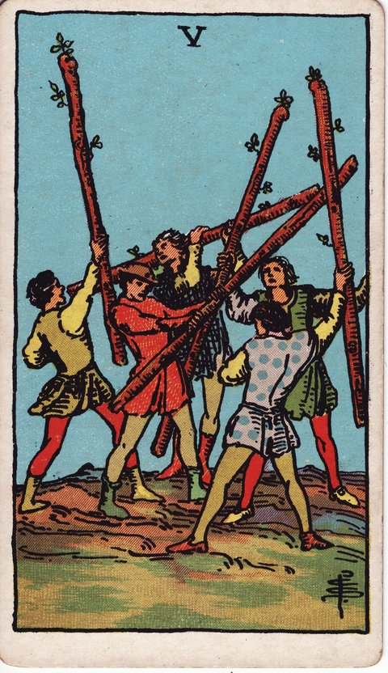

완드 · 타로 카드 백과사전
완드 5

정방향
키워드: 의견 충돌 · 경쟁 속 성장 · 정면 대응 · 시끌벅적한 논쟁 · 실력을 겨루는 자리 · 당당한 주장
조언: 갈등을 피하지 말고 서로의 입장을 정면으로 부딪쳐 더 나은 답을 찾아보세요.
연애운
솔로
마음에 드는 상대를 두고 은근한 경쟁이 생길 수 있는 시기입니다. 위축되지 말고 자신만의 매력을 적극적으로 드러내보세요.
커플
사소한 다툼이나 의견 차이가 생기지만 극복 가능한 시기입니다. 오히려 이런 부딪힘을 통해 서로를 더 깊이 이해하게 될 수 있어요.
재물운
소비
가격 비교나 협상을 통해 더 나은 조건을 얻어낼 수 있는 시기입니다. 적극적으로 따져보는 태도가 이득으로 돌아옵니다.
투자
경쟁이나 협상 속에서 재정적 결정을 내려야 하는 시기입니다. 여러 의견을 듣고 비교한 뒤 결정하면 더 나은 선택을 할 수 있어요.
취업운
구직
여러 경쟁자들 사이에서 실력으로 승부해야 하는 시기입니다. 부담스럽더라도 경쟁을 성장의 기회로 받아들여보세요.
이직
동료나 경쟁자와의 경쟁 속에서 실력을 겨뤄야 하는 시기입니다. 부딪히는 과정에서 자신의 강점을 더 명확히 알게 될 수 있어요.
직장운
팀워크
팀 내 의견 충돌 속에서 더 나은 방안을 찾아가는 시기입니다. 다양한 의견을 정면으로 논의하면 좋은 결론에 이를 수 있어요.
개인성과
승진이나 인사 평가를 앞두고 동료와 은근히 비교당하는 부담스러운 시기입니다. 남과의 비교에 흔들리기보다 자신의 업무 성과 기록을 착실히 쌓아두세요.
사업운
창업준비
동업자나 초기 투자자와 지분, 역할을 두고 팽팽한 신경전이 벌어질 수 있는 시기입니다. 감정적으로 부딪히기보다 계약서와 숫자를 근거로 협상해보세요.
운영중
거래처나 동업자와의 이견을 조율해야 하는 시기입니다. 부딪히는 과정을 거쳐야 더 견고한 합의에 이를 수 있습니다.
학업운
시험준비
선의의 경쟁이 학습 동기를 자극하는 시기입니다. 함께 공부하는 친구들과 서로 자극을 주고받으며 실력을 키워보세요.
진로고민
여러 진로 사이에서 고민이 깊어지는 시기입니다. 각각의 장단점을 정면으로 비교해보면 답이 더 뚜렷해집니다.
건강운
신체
활동적인 경쟁이나 운동이 활력을 주는 시기입니다. 함께 운동할 상대가 있다면 서로 자극을 주고받으며 실력을 키워보세요.
정신
부딪히는 상황 속에서도 스트레스를 발산할 출구를 찾는 시기입니다. 억누르기보다 건강한 방식으로 감정을 표출해보세요.
대인관계운
새로운 인연
처음 만난 사람들과도 스스럼없이 자기 생각을 주고받으며 빠르게 친해지는 시기입니다. 적극적으로 대화에 뛰어들면 마음 맞는 사람을 발견할 수 있어요.
기존 관계
오랜 친구나 동료와도 사소한 의견 충돌이 생길 수 있는 시기입니다. 다름을 인정하는 과정에서 관계가 더 단단해질 수 있습니다.
명예운
선의의 경쟁이 평판을 높이는 계기가 되는 시기입니다. 정정당당하게 겨루는 모습이 주변의 인정을 받을 수 있어요.
이사운
여러 선택지 속에서 이동 결정을 두고 경쟁하는 시기입니다. 다양한 조건을 비교하는 과정이 결국 더 나은 선택으로 이어집니다.
자식운
아이와의 의견 충돌 속에서도 성장이 있는 시기입니다. 부딪히는 과정을 통해 서로를 더 이해하게 될 수 있습니다.
역방향
키워드: 억눌린 갈등 · 회피 · 쌓인 긴장 · 삼켜진 불만 · 응어리진 속마음 · 터지기 직전
조언: 억누르고 있던 갈등이 있다면 더 커지기 전에 지금 풀어내세요.
연애운
솔로
다가가고 싶은 마음을 계속 누르기만 하다 답답함이 쌓이고 있을 수 있습니다. 마음을 표현하지 않으면 기회조차 생기지 않습니다.
커플
갈등을 계속 피하기만 하다 감정이 쌓이고 있을 수 있습니다. 불편한 대화라도 미루면 미룰수록 골이 깊어질 수 있으니 지금 풀어보세요.
재물운
소비
돈 문제로 주변과 갈등이 생겼지만 해결을 미루고 있을 수 있습니다. 정산이나 분담 문제는 명확히 짚고 넘어가는 것이 좋습니다.
투자
자금을 둘러싼 갈등이 해결되지 않고 쌓이고 있을 수 있습니다. 이해관계가 얽힌 문제일수록 빨리 테이블에 올려 정리하세요.
취업운
구직
치열한 경쟁에 지쳐 위축되고 있을 수 있습니다. 남과 비교하기보다 자신만의 속도와 강점에 집중해보세요.
이직
억눌린 갈등이 업무 분위기를 무겁게 만들 수 있습니다. 불편한 관계를 방치하면 이직 결정에도 나쁜 영향을 줄 수 있으니 정리하고 넘어가세요.
직장운
팀워크
회의 때마다 의견이 부딪히며 팀 분위기가 냉랭해지고 있을 수 있습니다. 감정이 상한 채로 방치하면 프로젝트 진행에도 지장이 생기니 자리를 만들어 풀어보세요.
개인성과
계속되는 야근과 성과 압박에 자신감이 바닥나고 있을 수 있습니다. 혼자 끌어안지 말고 팀장에게 업무 조정을 요청해보세요.
사업운
창업준비
동업자와의 역할 분담이나 지분 문제로 갈등의 골이 깊어지고 있을 수 있습니다. 감정이 상하기 전에 제3자를 두고 중재를 받아보는 것도 방법입니다.
운영중
직원이나 거래처와의 갈등이 표면화되지 못한 채 곪고 있을 수 있습니다. 문제를 덮어두면 더 큰 손실로 이어질 수 있습니다.
학업운
시험준비
비교나 경쟁에서 오는 스트레스가 쌓이고 있을 수 있습니다. 남의 성적에 신경 쓰기보다 자신의 계획에 집중해보세요.
진로고민
진로에 대한 고민을 계속 미루기만 하다 불안이 쌓이고 있을 수 있습니다. 막연한 걱정을 구체적인 질문으로 바꿔 하나씩 풀어보세요.
건강운
신체
스트레스가 해소되지 못하고 몸에 쌓이고 있을 수 있습니다. 긴장을 풀어줄 활동을 의식적으로 찾아보세요.
정신
억눌러온 갈등이 마음의 부담으로 쌓이고 있을 수 있습니다. 혼자 참기보다 믿을 만한 사람에게 털어놓는 것이 도움이 됩니다.
대인관계운
새로운 인연
새로운 관계에서 생긴 불편함을 애써 참고 있을 수 있습니다. 처음부터 솔직하게 의견을 표현하는 것이 나중을 위해 낫습니다.
기존 관계
친구나 동료와의 서운함을 애써 못 본 척하며 넘어가고 있을 수 있습니다. 곪은 감정은 결국 더 큰 다툼으로 터질 수 있으니 미리 풀어두세요.
명예운
갈등이 평판에 부정적인 영향을 줄 수 있습니다. 감정적으로 대응하기보다 차분하게 문제를 해결하는 모습을 보여주세요.
이사운
이동을 둘러싼 갈등이 계속 쌓이고 있을 수 있습니다. 가족이나 동거인과의 의견 차이는 미루지 말고 지금 조율하세요.
자식운
아이와의 갈등이 풀리지 않고 쌓이고 있을 수 있습니다. 감정적으로 부딪히기보다 아이의 입장에서 차분히 들어보는 시간이 필요합니다.
같은 슈트: 완드 에이스 · 완드 2 · 완드 3 · 완드 4 · 완드 5 · 완드 6 · 완드 7 · 완드 8 · 완드 9 · 완드 10 · 완드 시종 · 완드 기사 · 완드 퀸 · 완드 킹
홈에서 직접 카드 뽑아보기 ↗